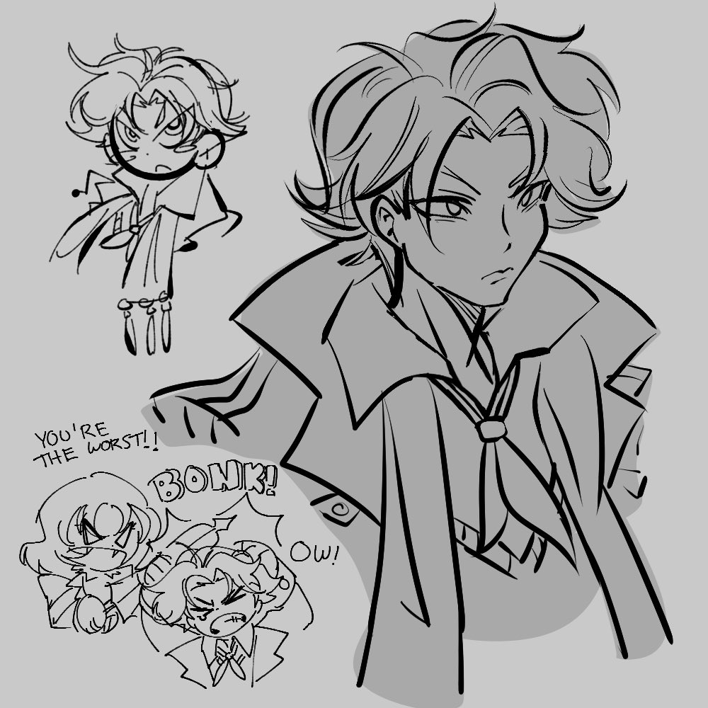

Porque me gusta dibujar
Me gusta dibujar por una razon muy sencilla, y es que es una manera de traer mi imaginacion al mundo real, o por lo menos asi lo visualizo, siempre estoy imaginando interaciones o simplemente como se verian algunos de mis personajes favoritos y asi. Nunca he estudiado formalmente algo que tenga que llevar con el arte de dibujar, solo he consumido algunos videos. El software que uso es Krita aunque empece con paint y paint3d, son medio obsoletos pero les tengo cariño aun lol
Algunos de mis dibujos
-
Garabato de pocket:
 -
Sketch de idea de como seria su relacion
:
-
Foto de Matrimonio
:
-
Dibujo que hice en la secundaria

-
Dibujo que hice de makoto cuando salip P3R

Something i would love to do in the future maybe probablemente
de los juegos he jugado ultimamente, me gustaria empezar a dibujar a personajes de metaphor refantazio, las inspiraciones que toma para crear su arte es wow, y para ser un juego que me gusto mucho siento q no le he dado el amor que se merece de mi parte